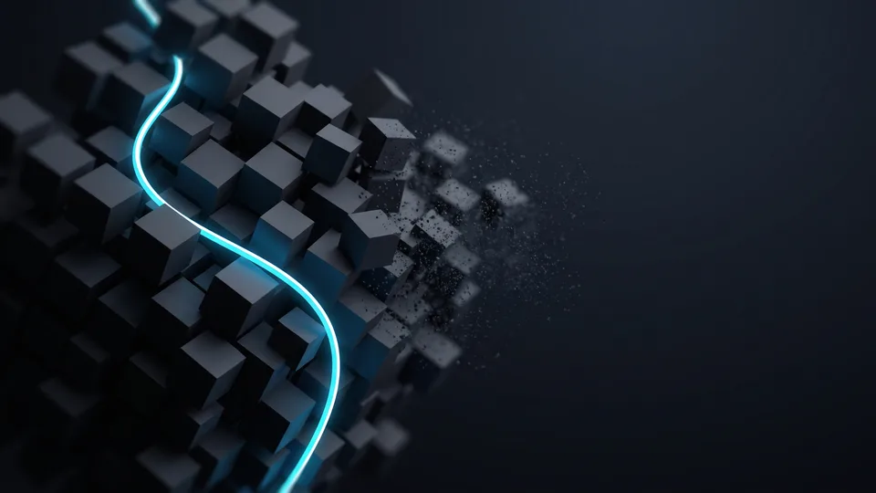

Tasarım Yazılımları Arasındaki Temel Fark Nedir?
Grafik tasarım programları dört ayrı işi çözer: piksel düzenleme, vektörel çizim, arayüz kurgusu ve şablon üretimi. Fark menülerde değil, çıktı mantığında saklıdır. Photoshop fotoğrafı işler, Illustrator formu çizer, Figma ekranı kurgular, Canva ise hazır iskeleti dakikalar içinde çoğaltır. Doğru eşleşme, işin türünden çıkar.
Araç kararını özellik listesine bakarak vermek yanıltıcıdır. Biz tercihi çıktı üzerinden yapıyoruz. Bir katalog sayfası, bir mobil ekran ve bir sosyal gönderi farklı üretim hatları ister. Grafik tasarım hizmetlerimizde her iş için ayrı bir zincir kuruyoruz; dosyanın hangi aşamada hangi biçime dönüşeceği baştan belli olduğu için teslim gününde sürpriz çıkmıyor. Grafik tasarım programları bu zincirin yalnız bir halkasıdır. Ekipler çoğu zaman tek bir uygulamada ısrar ediyor. Oysa sağlıklı kurgu, iki ya da üç aracın birbirine dosya devretmesiyle ayakta durur. Baskı işi ağır basıyorsa vektör aracı, ekran işi ağır basıyorsa arayüz aracı öne geçer.
Raster ve vektör ayrımı ne demektir?
Raster, görüntüyü piksel ızgarasında saklayan dosya biçimidir. Vektör ise şekli matematiksel eğrilerle tanımlar. Bu kısa ayrım bütçenizi doğrudan etkiler. Rasterda büyütülen logo kenarlarında kırılır. Vektörde aynı logo tabelaya da kartvizite de sorunsuz gider. Bir aracın yetkinliği, hangi dosya biçimine odaklandığına bağlıdır.
Lisans modeli seçimi neden önemli?
Lisans modeli, bir yazılımın aylık maliyetini ve ekip içi erişimini belirleyen ticari çerçevedir. Adobe tarafında abonelik kişi başına ilerlerken Figma koltuk sayısını, Canva ise ücretsiz katmandan başlayan kademeleri esas alıyor. Beş kişilik bir pazarlama takımında grafik tasarım programları yıllık bütçede ciddi bir kalem oluşturur. Sözleşmeden önce koltuk devri şartını okuyun.
Photoshop mu Illustrator mı: Hangi İş Hangi Araçta Doğar?
Photoshop mevcut bir görüntüyü düzenler, Illustrator ise sıfırdan biçim üretir. Fotoğraf rötuşu, banner kurgusu ve doku çalışması Photoshop'ta doğar. Logo, ikon seti, ambalaj ve tabela Illustrator'da doğar. İkisini karıştıran ekipler baskı aşamasında çözünürlük sorunuyla yüzleşir. Grafik tasarım programları içinde bu ikisi kardeş sayılır ama görev alanları ayrıdır.
Sahada en sık gördüğümüz hata şu: logo Photoshop'ta çiziliyor. Dosya ekranda güzel durur. Matbaa üç metrelik afiş istediğinde iş baştan başlar. Vektörel kaynağı olmayan marka, her yeni mecrada yeniden çizim maliyeti öder. Grafik tasarım programları arasındaki en pahalı yanlış eşleşme tam olarak budur. Photoshop ile Illustrator arasındaki gerçek fark tam burada görünür olur.
Fotoğraf ve rötuş senaryosu
Ürün fotoğrafı çeken bir e-ticaret ekibi için Photoshop hâlâ gerçekçi seçenek. Katman maskeleri, akıllı nesneler ve toplu işlem betikleri aynı ayarı yüzlerce dosyaya tek seferde uygular. Toplu işlem kaydını bir kez hazırlar, sonraki çekimlerde aynı kaydı çalıştırırsınız. Affinity Photo yakın bir alternatif; koşulları üreticinin güncel sayfasından doğrulayın.
Logo ve marka kimliği senaryosu
Marka kimliği işi, ölçekten bağımsız keskinlik ister. Illustrator bu yüzden ajans tarafının standardı olmayı sürdürüyor. Pathfinder araçları, ızgara sistemi ve tipografi kontrolü rakiplerinin bir adım önünde. Matbaada renk ayrı bir başlık; kaynak dosyayı CMYK'ya çevirmek ve kurumsal rengi spot renk tanımlamak teslimi garantiye alır. CorelDRAW ise tabela ve tekstil atölyelerinde güçlü duruyor.
Teslim dosyası kontrol listesi
Ajansınızdan logo teslim alırken üç dosya isteyin: düzenlenebilir vektör kaynağı, baskı için PDF ve web için SVG. Bu üçlü elinizde yoksa marka varlığınız aracın içinde kilitli kalır.
Figma Ekip Çalışmasını Nasıl Değiştirir?
Figma, tasarımı dosya alışverişinden çıkarıp tarayıcıdaki ortak bir odaya taşır. Tasarımcı, yazılımcı ve pazarlama sorumlusu aynı ekrana aynı anda bakar. Yorumlar dosyanın üstünde birikir, sürüm karmaşası ortadan kalkar. Web ve mobil arayüz projelerinde bu düzen tek başına bir onay turunu ortadan kaldırabilir.
Kurumsal site ya da uygulama yenilerken en pahalı gecikme onay turlarında çıkar. Bileşen kütüphanesi bu turu kısaltır. Bir düğmenin rengini merkezden değiştirirsiniz, yüz ekran birden güncellenir. Yorum, onay ve revizyon aynı bağlantıda birikir; e-posta trafiği azalır. Geliştirici modu ise tasarımla kod arasındaki mesafeyi kapatıyor; yazılımcı ölçüyü, rengi ve boşluk değerini aynı ekranda kendisi okuduğu için tasarımcıya soru sorma ihtiyacı azalıyor. Uygulama arayüz projelerimizde ve kurumsal web sitesi çalışmalarımızda onay akışını bu yapı üzerinden yürütüyoruz. Ekip büyüdükçe grafik tasarım programları arasında ortak alan sunanlar öne geçer.
Tarayıcı tabanlı çalışmanın sınırı nerede?
Figma'nın gücü ekran tasarımında toplanıyor; matbaa tarafında aynı rahatlığı sunmuyor. CMYK renk yönetimi ve taşma payı gibi baskı gereksinimlerini karşılamaz. Yüksek çözünürlüklü fotoğraf düzenlemede de zorlanır. Baskıyı dışarıdan alan ekipler için bu sınır sorun değil. Kendi kataloğunu üreten şirketler vektör tarafına ayrı bir araç ayırmalı: ekranı Figma'da bitirin, matbaa dosyasını vektör aracında hazırlayın.
Canva Gibi Şablon Araçları Nerede Yetersiz Kalır?
Canva, hazır şablonlarla hızlı görsel üreten bulut tabanlı bir araçtır. Sosyal medya gönderisi, sunum ve basit afişte işi fazlasıyla görür. Özgün marka dili, karmaşık baskı işleri ve vektörel hassasiyet gerektiğinde duvara toslar. Sınırı bilmek, aracı kötülemekten çok daha faydalıdır. Beklentiyi doğru kurun, sonuç sizi şaşırtmasın.
İnternet üzerinden satış yapan işletme sayısı hızla artıyor. ETBİS verilerine göre e-ticaret yapan işletme sayısı 634.611'e ulaştı. Bu yoğunlukta her marka haftada onlarca görsel çıkarıyor. Şablon araçları tam olarak bu hacmi taşımak için doğdu. Ancak şablon, rakibinizin de eriştiği ortak bir kaynaktır; aynı iskelet üzerine kurulan iki gönderiyi logosuz gördüğünüzde birbirinden ayırmakta zorlanırsınız. Grafik tasarım programları arasında şablon araçları hızda kazanır, ayrışmada geri kalır. Marka ayrışması ise ancak özgün tasarımla gelir.
Sosyal içerik üretiminde hız avantajı
Haftada on beş gönderi çıkaran bir ekipte şablon mantığı gerçekten işe yarar. Kurumsal kimliğinizi bir kez yükleyin, renk ve yazı tipi otomatik gelsin. Sosyal medya yönetimi tarafında biz de rutin gönderilerde bu yolu seçiyoruz. Kampanya görselini yine tasarımcı çizer, çünkü şablon marka sesini taşımaz. Rutin ile kampanyayı ayırmak, hem hızı hem de marka tutarlılığını aynı anda korumanın en pratik yolu.
“2024 yılında 600 bin 800 olan e-ticaret yapan işletme sayısı, 2025'te 634 bin 611'e yükseldi.”
— Ticaret Bakanlığı, Türkiye'de E-Ticaretin Görünümü 2025
KOBİ Ekipleri İçin Araç Seçimi ve Maliyet Dengesi
Seçim, ekip büyüklüğü ile üretim hacminin kesiştiği noktada netleşir. Tek kişilik pazarlama biriminde iki uygulama yeter. Beş kişilik yapıda ortak kütüphane şart olur. Grafik tasarım programları için ödediğiniz yıllık lisans, dış kaynak faturasının altında kalıyorsa iç üretim mantıklıdır. Aksi halde ajansla ilerlemek ucuza gelir.
Bütçeyi konuşurken yalnız abonelik bedeline bakmayın. Öğrenme süresi de bir maliyet kalemidir. Bir aracı ekibe tanıtmak ve eski dosyaları taşımak zaman ister; bu kalem lisans bedelinden görünmez, ama takvimi daha çok zorlar. Aracın yetenekleri kadar ekibin onu benimseme hızı da belirleyicidir. Ekran işlerinde Figma, baskı işlerinde Illustrator ilk tercih olarak öne çıkıyor.
Ekip büyüklüğüne göre eşleştirme
Tek kişilik ekipte Canva ve tek bir vektör aracı yeterlidir. Üç kişilik yapıda Figma ortak alan kazandırır. Beş kişiyi aşan takımlarda Adobe ekosistemi tam paket olarak anlam kazanır. Almadan önce deneme sürümünde gerçek bir işi bitirin; kararı kendi üretim listenize göre verin.
Beş adımda araç seçimi
- Son üç ayın görsellerini türlerine ayırın.
- İşlerinizin belirgin bir bölümü baskıya gidiyorsa vektör aracını listenin başına alın.
- Aynı dosyaya kaç kişinin dokunduğunu sayın.
- Aylık lisans giderini dış kaynak faturasıyla karşılaştırın.
- Seçtiğiniz aracı önce tek kampanyada deneyin, sonra yaygınlaştırın.

Popüler Grafik Tasarım Programları Karşılaştırma Tablosu
| Program | Güçlü olduğu iş | Öğrenme eşiği | Ekip çalışması | Kime uygun |
|---|---|---|---|---|
| Photoshop | Fotoğraf rötuşu, banner, doku | Yüksek | Dosya paylaşımı | E-ticaret ve içerik ekipleri |
| Illustrator | Logo, ikon, ambalaj, tabela | Yüksek | Dosya paylaşımı | Marka kimliği üreten ekipler |
| Figma | Web ve mobil arayüz | Orta | Eş zamanlı ve güçlü | Ürün ve yazılım ekipleri |
| Canva | Sosyal gönderi, sunum | Düşük | Bulut tabanlı, kolay | Küçük pazarlama birimleri |
| Affinity | Fotoğraf ve vektör düzenleme | Orta | Sınırlı | Canva çatısındaki güncel koşulu doğrulayanlar |
| CorelDRAW | Tabela, tekstil ve baskı odaklı vektör | Orta | Sınırlı | Baskı atölyeleri ve matbaalar |
Kapsamınıza uygun yol haritasını birlikte çıkaralım; adımları ve zamanlamayı netleştirelim.
Kapsam çıkaralım Hizmet sayfasını görEn doğru araç, ekibinizin her gün açtığı uygulamadır. Photoshop, Illustrator, Figma ve Canva aynı zincirin farklı halkalarıdır. Kıyas tablosunu kendi iş listenizle yan yana koyun. Önce üretim listenizi çıkarın, ardından bütçeyi oturtun. Grafik tasarım kurulumunuzu markanıza göre planlamak için teklif formumuzu doldurabilirsiniz.